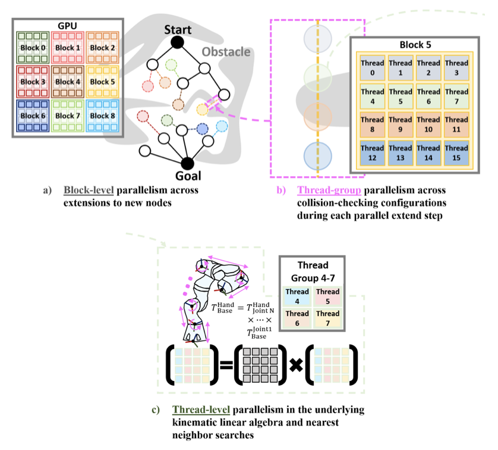
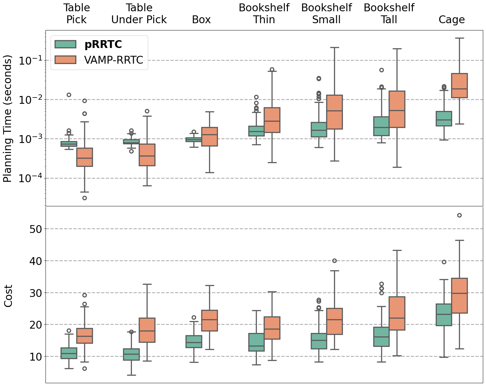
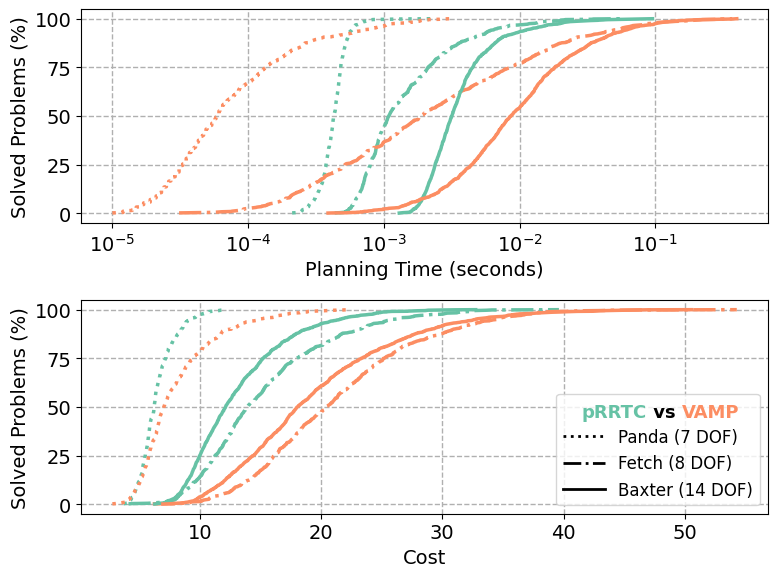

pRRTC: GPU-Parallel RRT-Connect for Fast, Consistent, and Low-Cost Motion Planning
10× faster planning and 5.4× more consistent, real-time collision-free motion for high-DoF robots.
* equal contribution
Hardware Demos
Integrated GPU Parallelism for Motion Planning
In this work we present pRRTC, an RRT-Connect based planner co-designed for GPU acceleration across the entire algorithm through parallel expansion and SIMT-optimized collision checking. We evaluate the effectiveness of pRRTC on the MotionBenchMaker dataset using robots with 7, 8, and 14 degrees of freedom (DoF). Compared to the state-of-the-art, pRRTC achieves as much as a 10× speedup on constrained reaching tasks with a 5.4× reduction in standard deviation. pRRTC also achieves a 1.4× reduction in average initial path cost. Finally, we deploy pRRTC on a 14-DoF dual Franka Panda arm setup and demonstrate real-time, collision-free motion planning with dynamic obstacles. We open-source our planner to support the wider community.
Multi-Scale GPU Parallel Design
At the mid-level, pRRTC runs hundreds of parallel RRT-Connect iterations asynchronously across both trees. This enables pRRTC to explore the configuration space faster and find higher quality paths. At the low-level, pRRTC parallelizes nearest neighbors search and discretized edge collision checking.

Benchmark Performance
When benchmarked against the CPU-based SIMD-accelerated VAMP-RRTC, pRRTC achieves as much as a 10× speedup in planning time on the 8-DoF Fetch robot.

pRRTC shows increasing benefit for systems of higher dimension, with the largest gains on the 14-DoF Baxter robot.

Benchmark Path Visualizations
Collision-free paths planned by pRRTC across robots of varying complexity. Select a robot and scene to view.
BibTeX
@inproceedings{huang2026prrtc,
title={pRRTC: GPU-Parallel RRT-Connect for Fast, Consistent, and Low-Cost Motion Planning},
author={Huang, Chih H and Jadhav, Pranav and Plancher, Brian and Kingston, Zachary},
booktitle={2026 IEEE International Conference on Robotics and Automation (ICRA)},
year={2026},
organization={IEEE}
}